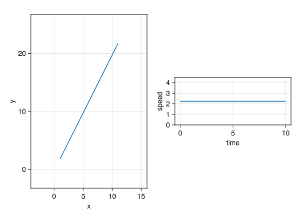
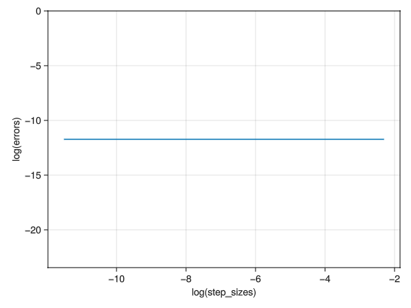

problem08
8. Simplest dynamics with Polar coordinates. This is the simplest dynamics problem, but posed in polar coordinates. Assume a particle is on a plane with no force on it. So, you know it moves at constant speed in a constant direction. a. Write the differential equations \(\vec{a} = \vec{0}\) in polar coordinates. b. Solve them numerically for various initial conditions. c. Plot the solution and check that the motion is a straight line at constant speed. d. Using your numerical result, pick a way to measure how straight the path is, and see how straight a line your polar coordinate solution gives. You should define a quantitative measure of straightness, and then measure it with your solution. e. Is the path more straight when you refine the numerical tolerances.
a. Write differential equations in polar form
We finally get:
\[\vec{a} = (\ddot{r} - r\omega^2)\hat{e}_r + (2\dot{r}\omega + r\dot{\omega})\hat{e}_\theta = \vec{0}\]
We can break this down into two scalar differential equations of non-unity order,
\[ \ddot{r} - r\omega^2 = 0 \]
\[ 2\dot{r}\omega + r \dot{\omega} = 0 \]
Rearranging the terms
\[ \ddot{r} = r\omega^2 \]
\[ \dot{\omega} = - 2r^{-1}v_r\omega \]
introducing the state variable in the following way to reduce this into a first order vector differential equation, also we include \(\theta\) to able to track it:
\[\vec{z} = \begin{bmatrix} \dot{r} \\ \dot{v_r} \\ \dot{\theta} \\ \dot{\omega} \end{bmatrix} = \begin{bmatrix} v_r \\ r\omega^2 \\ \omega \\ - 2r^{-1}v_r\omega \\ \end{bmatrix} \]
The corresponding code for this ODE in file ./SimplestDynamicsPolar/src/SimplestDynamicsPolar.jl:
# Physics: ODE
function aceleration_zero_polar!(du, u, p, t)
r = u[1]
vᵣ = u[2]
θ = u[3]
ω = u[4]
du[1] = vᵣ
du[2] = r * ω^2
du[3] = ω
du[4] = -2 * r^(-1) * vᵣ * ω
endb. Solve them numerically for various initial conditions
Some trajectories and some animations for various initial sets of initial conditions look indeed like uniform motion.
In file ./SimplestDynamicsPolar/src/SimplestDynamicsPolar.jl:
# Problem setup
r₀ = 2
θ₀ = π/3
v⃗ = [1;2]
êᵣ = [cos(θ₀); sin(θ₀)]
êₚ = [-sin(θ₀); cos(θ₀)]
vᵣ₀ = dot(v⃗, êᵣ)
vₚ₀ = dot(v⃗ - vᵣ₀ * êᵣ, êₚ)
ω₀ = vₚ₀ / r₀
u₀ = [r₀; vᵣ₀; θ₀; ω₀]
tspan = (0.0, 10.0)
p = nothing
prob = ODEProblem(acceleration_zero_polar!, u₀, tspan, p)
# Numerical solution
Δh = 0.5
sol = solve(prob, saveat=Δh, abstol=1, reltol=1)c. Plot the solution and check that the motion is a straight line at constant speed.
In file ./SimplestDynamicsPolar/src/SimplestDynamicsPolar.jl:
# Plotting trajectories
function plot_trajectory_makie(sol)
# Convert solution to matrix form
sol_matrix = reduce(hcat, sol.u)'
r = sol_matrix[:, 1]
θ = sol_matrix[:, 3]
r⃗ = r .* [cos.(θ) sin.(θ)]
x = r⃗[:, 1]
y = r⃗[:, 2]
xlimits = (minimum(x)-5, maximum(x)+5)
ylimits = (minimum(y)-5, maximum(y)+5)
ω = sol_matrix[:, 4]
vᵣ = sol_matrix[:, 2]
vₚ = ω .* r
v⃗ = [vᵣ vₚ]
s = norm.([v⃗[i, :] for i in 1:length(length(v⃗))])
t = sol.t
println(typeof(v⃗), size(v⃗), size(t), v⃗)
# Create figure
fig = GLMakie.Figure()
ax1 = GLMakie.Axis(fig[1, 1], xlabel="x", ylabel="y", limits=(xlimits, ylimits), aspect = DataAspect())
ax2 = GLMakie.Axis(fig[1, 2], xlabel="time", ylabel="speed", aspect = DataAspect())
GLMakie.lines!(ax1, x, y)
GLMakie.lines!(ax2, t, s)
GLMakie.save("problem08-trajectory.png", fig)
GLMakie.display(fig)
return nothing
end
plot_trajectory_makie(sol)The plots generated by this:

Left: The position of particle, \(x\) vs \(y\), Right: The speed of particle, \(\|\vec{v}\|\) vs \(t\)
d. Define a metric to measure straightness, plot
Just like problem03, we can either use an analog to slither, i.e. the root mean squared error, but that again would require a lot of computer memory, which corresponds to impossibility on my computer, hence the easiest way here is the tail_match.
The measure here is the euclidean norm from the expected end point:
\[\mathbf{\hat{p}} = r_0\left(cos(\theta_0)\hat{i} + sin(\theta_0)\hat{j}\right) + \vec{v} \Delta t\]
\[e = \texttt{norm}(\mathbf{\vec{p}}-\mathbf{\hat{p}})\]
The code corresponding to this, in file ./SimplestDynamicsPolar/src/SimplestDynamicsPolar.jl:
# Measuring straightness
function norm_expected_straight_endpoint(p⃗)
Δt = tspan[2] - tspan[1]
v⃗_cartesian = vᵣ₀ .* êᵣ₀ + vₚ₀ .* êₚ₀
p̂ = r₀ .* [cos(θ₀); sin(θ₀)] .+ v⃗_cartesian .* Δt
s⃗ = p⃗ .- p̂
e = norm(s⃗)
return e
endThe path is already very straight without refining \(\Delta h\):

This sums up my attempt of problem08.